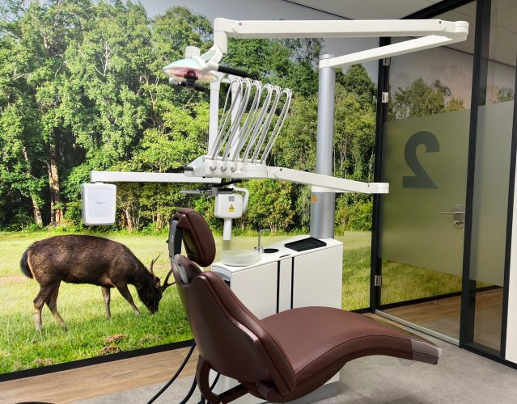
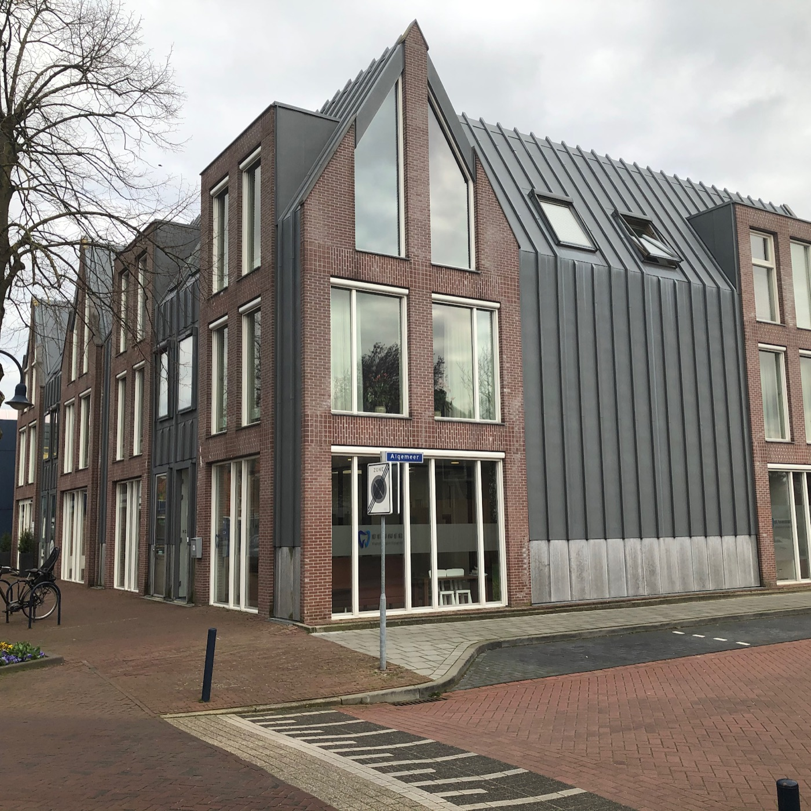

Tandartsen aan de Kerkhoflaan, Bennekom
Rustig in de stoel, zorgvuldig aan het werk.
Van de halfjaarlijkse controle tot een complete gebitsrenovatie. We nemen de tijd om uit te leggen wat we zien, wat het kost en welke keuzes u heeft. Ook als u al jaren tegen de tandarts opziet.
- Ma t/m do
- 07:00 tot 21:00
- Vrijdag
- 07:00 tot 14:00

21 reviews op Google
Wat patiënten over ons zeggen
Ik heb een angst voor de tandarts. En ben 10 jaar eigenlijk zo goed als niet heen geweest. Heel vriendelijk ontvangen, duidelijk aangegeven dat ik een angst heb, en daar is waanzinnig goed mee omgegaan. Ik miste een halve kies, die is keurig netjes gerepareerd. Ik ben meer dan tevreden! Dankjewel
"Door het jarenlange knarsetanden was mijn gebit echt weggesleten. Pieter heeft er echt weer een plaatje van gemaakt 👍"
"Mijn gebit was er slechter aan toe dan ik wilde toegeven. Door knarsen waren tanden scheef afgesleten, en ik had verbruining en scheefstaande tanden. Benner tandarts gaf mij het vertrouwen dat het allemaal goed ging komen."
"Hr. Benner heeft op meest vakkundige wijze bij mij een complete gebitsrenovatie uitgevoerd met oa 3 implantaten. Wat opvalt is de persoonlijke aandacht wat jij als patiënt prettig vind. …"
"Mijn gebit was aan een renovatie toe en Tandarts Benner heeft net dat stapje extra gedaan om een goed behandelplan op te stellen en uit te voeren. Inmiddels heb ik weer een prachtig gebit en kom ik alleen nog voor preventie en controle."
Zo gaat een behandeling
U weet vooraf waar u aan toe bent. Pas als u akkoord bent, beginnen we.
-
1
Periodieke controle
We kijken uw gebit na en nemen samen de dagelijkse mondverzorging door, zodat uw gebit en mond gezond blijven. Waar nodig helpen we u de mondhygiëne te verbeteren.
-
2
Eerst uitleg, dan pas behandelen
Zien we een probleem, dan bespreekt de tandarts met u:
- de te verwachten resultaten
- de risico's
- het aantal behandelingen
- de duur van de behandelingen
- de kosten
- alternatieve behandelingen
-
3
Kleine ingrepen snel, grote zorgvuldig gepland
Een gebitsreiniging of vulling volgt op korte termijn. Bij een uitgebreide behandeling krijgt u eerst een overzicht van de kosten. Na uw akkoord plannen we de behandeling, meestal binnen enkele weken.
-
4
Doorverwijzing als het nodig is
Is er een bijzondere behandeling nodig, zoals kaakchirurgie of orthodontie? Dan hoeft u niet zelf te zoeken: wij verwijzen u door. Uw gegevens bewaren we minstens 15 jaar in een beveiligd systeem en sturen we op uw schriftelijk verzoek door naar een andere behandelaar.
Het team
Dertien mensen, elk met een eigen rol. Zo weet u bij wie u terechtkomt en op welke dagen.
Tandartsen
- Pieter BennerMa, di, wo, do, BIG 89066028302
- Jasper VrielinkMa, do, vr, zzp, BIG 49933643402
- Loes MastenbroekMa, di, wo, zzp, BIG 49936605102
Mondhygiëne en preventie
- Anne-Sophie Bakhuizen van den BrinkMondhygiëniste, do, zzp
- Rianne SchuijrenMondhygiëniste, di, zzp
- Brianda de Wolff-WisgerhofParo-preventieassistente, ma, di, wo, do
- Sara KadirParo-preventieassistente, di, wo, do, vr
- Jacqueline HeiwegenPreventieassistente, ma, wo, vr
- YonasPreventieassistent
Assistentie en techniek
- Atefeh JamshidiTandartsassistente, ma, di, wo, do
- Iris BruinsmaTandartsassistente, ma, di, wo, do
- Denis Bakhuizen van den BrinkKlinisch prothesetechnicus, ma
Praktijk
- Christel VerwoertPraktijkmanager, ma, di, do, vr
Behandelaars met zzp erbij werken zelfstandig, onder eigen naam en verantwoordelijkheid, met een eigen klachtenregeling. De praktijk verzorgt hun facturatie als service.
Kwaliteit die we bijhouden
Goede behandelingen, materialen en administratie vragen om onderhoud. We werken volgens de richtlijnen van de beroepsvereniging en wetenschappelijke verenigingen in de mondzorg, en blijven leren.
Heeft u een idee hoe we u beter kunnen helpen? Laat het ons weten.
- Lidmaatschap wetenschappelijke vereniging
- Lezen van vakliteratuur
- Bij- en nascholing
- Intercollegiaal overleg
- Studiegroepen
- Interne scholing
- Kennistoetsen
- Nieuwe richtlijnen en praktijkwijzers invoeren
- Themaprojecten
- Klinische avonden

Langskomen of inschrijven
Nieuwe patiënten zijn welkom. Bel of mail ons, dan plannen we een eerste afspraak.
Bereikbaar
| Maandag | 07:00 tot 21:00 |
| Dinsdag | 07:00 tot 21:00 |
| Woensdag | 07:00 tot 21:00 |
| Donderdag | 07:00 tot 21:00 |
| Vrijdag | 07:00 tot 14:00 |
| Zaterdag en zondag | Gesloten |